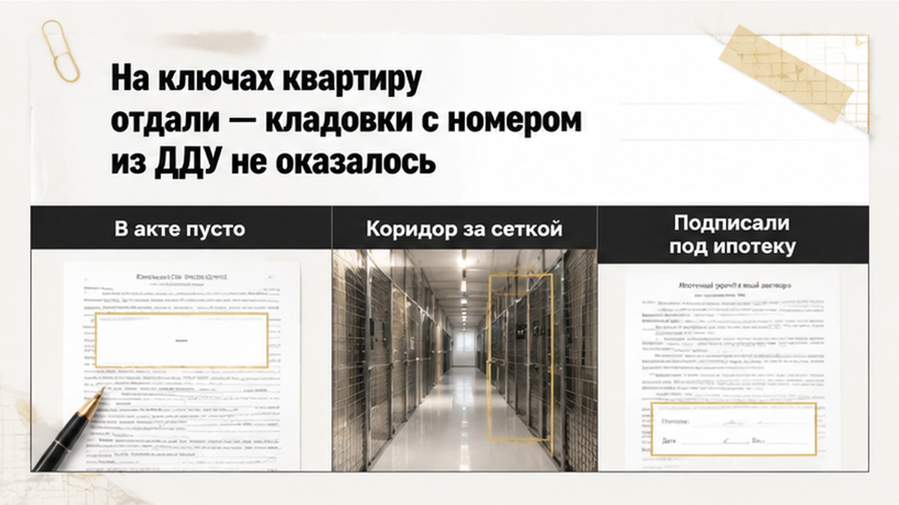

Ключи от квартиры в тюменской новостройке семья получила через четырнадцать месяцев после ДДУ. Кладовку из того же договора — не получила вообще. Она была оплачена отдельной строкой. Через два месяца застройщик предложил доплатить около 180 000 рублей. За то же самое помещение.
В комнате приёмки на столе лежали два экземпляра акта. Рядом рулетка, папка с распечатками договора. Муж нашёл нужную страницу и спросил про кладовку. Номер, площадь, цена — всё это стояло в тексте, который прошёл регистрацию. Менеджер посмотрел в планшет и ответил: кладовые пока не передают, номера немного сдвинулись, потом всё допишут. Ипотечный график поджимал. Платёж уже шёл, квартиру нужно было оформлять. Акт на квартиру подписали — про кладовку в нём не было ни строки.
Я Святослав Шакин, The Риэлтор, Тюмень. Разбираю приёмку новостроек и договоры по буквам, а не по обещаниям в офисе продаж. Пишите в Telegram или MAX — покажу, что смотреть именно в вашем ДДУ и акте.
В договоре кладовка была не приятным дополнением, а отдельной строкой. Назначение, этаж, площадь, условный номер по проектной декларации, цена, срок передачи. Закон о долевом строительстве (214-ФЗ, статья 4) требует описать конкретное помещение. То, которое опознаётся по плану и номеру, а не кладовую где-то в доме. Если номер, площадь, цена стоят в тексте, спорить о существовании помещения поздно. Оно продано.
Деньги ушли не застройщику в карман, а на эскроу-счёт. Это банковский счёт, где платежи дольщиков лежат до сдачи дома. От одного риска он защищает: пока дом не построен, застройщик до денег не дотянется. Но эскроу подтверждает только то, как вы платили. Он не доказывает, что вам передали помещение из договора. Я разбирал обратную историю, когда ключи от новостройки в Тюмени перенесли на год, а деньги на эскроу заморозили. Там человек не мог получить ни квартиру, ни свои средства. Здесь всё наизнанку. Оплата прошла, ключи в руке, а оплаченное помещение осталось на бумаге.

В акте приёма-передачи квартиры кладовка не упоминалась вообще. Ни как переданный объект, ни как непереданный. Документ говорил только про квартиру. А в жизни коридор с кладовыми стоял за строительной сеткой. Никто не смог показать пальцем, где то помещение, за которое семья заплатила полтора года назад. Есть тут и деталь тюменского рынка, которая работает против покупателя. В августе застройщики фиксировали падение спроса на кладовые и паркинги больше чем на 60% год к году. Отказаться от такой покупки сейчас легко: их почти не берут. Забрать уже оплаченную — труднее. Кто заплатил, а потом подписал акт на квартиру, в переговорах слабее того, кто ещё ничего не подписывал.
За две недели семья услышала три версии. Все три звучали убедительно, все три были про разное. Первая — не достроили, кладовые сдаём отдельным этапом. Это не решение, а признание просрочки. Если срок передачи помещения в договоре прошёл, он нарушен. Со всеми последствиями по 214-ФЗ, включая неустойку за нежилое помещение. Аргумент «сейчас всё равно ничего не начисляется» устарел. С 1 января 2026 года мораторий на начисление неустойки для соответствующих периодов снят. Считать надо по тексту договора, по конкретному периоду нарушения.
Вторая — номер поменялся, кладовка теперь другая. Номер, этаж и площадь — паспорт помещения. Они отличают вашу кладовку от соседней. Замена номера, уменьшение площади, предложение взять вот эту, почти такую же, — это уже другое помещение, не то, что в договоре. Поменять его в одиночку застройщик не вправе. Только письменным соглашением сторон. Условия ДДУ должны совпадать с проектной декларацией — документом застройщика о доме и помещениях. Если помещение с вашим номером там есть, перенумерация требует объяснения, а не пожатия плечами.
Третья и самая опасная — кладовка это опция, бонус к квартире. Слово «опция» юридического веса не имеет, когда помещение описано в зарегистрированном договоре с ценой. Деньги внесены. Платёж прошёл через банк. Договор зарегистрирован. Название в презентации обязательство не отменяет.
Одну развилку стоит проверить в своих бумагах сегодня же. Кладовка вне квартиры бывает оформлена в том же ДДУ. А бывает отдельным договором или допсоглашением. От этого зависит, как формулировать акт, что именно требовать. Смотреть надо на зарегистрированный текст, а не на буклет, не на переписку с менеджером. Ровно об этом я писал, когда в Тюмени застройщик сменил юрлицо и прислал дольщикам новый ДДУ. Сюжет другой, логика та же: читать договор до того, как отдал деньги или подпись.
В договоре кладовка стояла отдельной строкой, а не приятным дополнением к квартире. Назначение, этаж, площадь, условный номер по проектной декларации, цена, срок передачи. Закон о долевом строительстве (214-ФЗ, статья 4) требует описать конкретное помещение. То, которое видно на плане и опознаётся по номеру, а не кладовую где-то в доме. Если номер, площадь и цена есть в тексте, спорить о самом факте продажи поздно. Помещение продано.
Деньги ушли не застройщику в карман, а на эскроу-счёт. Это банковский счёт, где платежи дольщиков лежат до сдачи дома. От одного риска он защищает: пока дом не построен, застройщик до денег не дотянется. Но эскроу подтверждает только то, как вы платили. Он не подтверждает, что вам передали помещение из договора. Я разбирал и обратную историю, когда ключи от новостройки в Тюмени перенесли на год, а деньги на эскроу заморозили: там человек не получил ни квартиру, ни свои средства. Здесь всё наизнанку. Оплата прошла, ключи в руке, а оплаченное помещение осталось на бумаге.
В акте приёма-передачи квартиры кладовка не упоминалась вообще. Ни как переданный объект, ни как непереданный. Документ говорил только про квартиру. А в жизни коридор с кладовыми стоял за строительной сеткой. Никто не смог показать пальцем то помещение, за которое семья заплатила полтора года назад. И тут работает деталь тюменского рынка, которая покупателю не в помощь. В августе застройщики фиксировали падение спроса на кладовые и паркинги больше чем на 60% год к году. Отказаться от такой покупки сейчас легко, их почти не берут. Забрать уже оплаченную заметно труднее. Тот, кто заплатил и подписал акт на квартиру, в переговорах слабее того, кто пока ничего не подписывал.
За две недели семья услышала три версии. Каждая звучала убедительно, и каждая была про своё. Первая: не достроили, кладовые сдаём отдельным этапом. Это не решение проблемы, а признание просрочки. В договоре стоит срок передачи помещения, и срок прошёл. Значит, он нарушен — со всеми последствиями по 214-ФЗ, включая неустойку за нежилой объект. Довод «сейчас всё равно ничего не начисляется» устарел. С 1 января 2026 года мораторий на начисление неустойки для соответствующих периодов снят. Считать надо по тексту договора и по конкретному периоду нарушения.
Вторая версия: номер поменялся, кладовка теперь другая. Номер, этаж и площадь — это паспорт помещения. Они отличают вашу кладовку от соседней. Замена номера, меньшая площадь, предложение взять почти такую же — это смена предмета договора. А предмет договора в одиночку не меняют, только письменным соглашением сторон. Условия ДДУ должны совпадать с проектной декларацией. Так называется документ застройщика о доме и его помещениях. Если помещение с вашим номером там есть, перенумерация требует объяснения. Пожатия плечами тут недостаточно.
Третья версия самая опасная: кладовка — это опция, бонус к квартире. Слово «опция» юридического веса не имеет. Помещение описано в зарегистрированном договоре, с ценой и площадью. Деньги внесены, платёж прошёл через банк. Название в презентации обязательство застройщика не отменяет.
Одну развилку стоит проверить в своих бумагах уже сегодня. Кладовка вне квартиры оформляется по-разному: в том же ДДУ, отдельным договором, допсоглашением. От этого зависит, как формулировать акт и что требовать. Смотреть надо зарегистрированный текст, а не буклет и переписку с менеджером. Ровно об этом я писал, когда в Тюмени застройщик сменил юрлицо и прислал дольщикам новый ДДУ. Сюжет другой, логика та же: читать договор до того, как отдал деньги или подпись.
В офисе разговор за десять минут ушёл с кладовки на календарь. Ипотека одобрена, платёж уже начисляется. Банку нужна оформленная собственность. Эскроу раскрывается в связке с передачей. Все эти сроки сходятся в одну дату.
— Сегодня подписываем акт на квартиру, а кладовку допишем потом, когда достроят и утвердят нумерацию, — предложил менеджер.
Звучит по-человечески, и обманывать он никого не собирался. У сотрудника отдела продаж просто нет полномочий менять зарегистрированный договор. Обещание, сказанное голосом, обязательством застройщика не становится. Передачу объекта по 214-ФЗ оформляют передаточным актом, это статья 8. Простым языком: если спор дойдёт до юриста или суда, читать будут акт. Не переписку про «допишем потом».
Не скажу, что акт на квартиру при непереданной кладовке подписывать нельзя категорически. Смотреть надо ваш ДДУ, уведомление о готовности и форму акта. Но перед подписью в тексте ищут три вещи. Первое — фразу об исполнении обязательств полностью. Второе — строку про отсутствие претензий и передачу всех объектов. Третье — любую формулировку, которая читается как согласие на замену помещения. Если такие слова стоят, вы подписываете уже не только квартиру.
Рабочий выход доступен почти всегда: письменная оговорка в акте или отдельным приложением. Смысл её простой. Квартиру принял, а кладовка с таким-то номером и площадью по такому-то ДДУ не передана. Требования по ней сохраняются, согласия на замену и доплату я не давал. В тот же день отправляется претензия о непередаче, с доказательством отправки. Не «я звонил, мне сказали», а дата и подтверждение на руках. Сам по себе акт на квартиру обязательство по кладовке не прекращает. Но общая фраза об отсутствии претензий плюс месяцы молчания — минус в вашей позиции.
Уйти в полный отказ и не приезжать на приёмку тоже небезопасно. Застройщик может сослаться на уклонение и оформить односторонний акт. Поэтому в письме я собираю всё сразу: номер ДДУ, данные объекта, факт оплаты, даты уведомления и явки. Отдельной строкой — факт непередачи кладовки. Ещё одной — что согласия на замену или доплату вы не давали. Плюс требование передать объект из договора. Похожая логика была в истории, где семейную ипотеку на новостройку одобрили, а эскроу не открыли. Одобренный кредит вопрос с документами не закрывает. Он только добавляет спешки.
Через два месяца после ключей позвонили с решением. Вариант первый — забрать другую кладовку, поменьше договорной. Вариант второй — сохранить площадь, но доплатить около 180 000 рублей. Объяснение простое: нумерация изменилась, помещение теперь другое. Ни одно предложение не пришло соглашением на подпись. Голос по телефону, сообщение в мессенджере — всё. Оба варианта стоят на одной подмене. Помещение оплачено по зарегистрированному договору полтора года назад, а его снова выставили на торг.
Юридически картина другая. Номер, площадь, этаж делают кладовку конкретным помещением, а не абстрактным местом в цоколе. Заменить номер, урезать площадь, выдать соседнюю кладовку без согласия покупателя — это смена предмета договора. Не техническая правка в базе. Цена тоже меняется письменным соглашением сторон, а не звонком менеджера. Подписать такую бумагу в спешке, чтобы наконец закрыть вопрос, — самый дорогой способ согласиться с тем, с чем вы не согласны. Сумма 180 000 рублей и четырнадцать месяцев ожидания — детали этой истории. Не рыночный ориентир: у соседа по площадке цифры будут свои.
Требования, из которых можно выбирать, перечислены в статьях 6 и 7 214-ФЗ. Передать то самое помещение. Устранить несоответствие, если кладовка есть, но не та по характеристикам. Соразмерно уменьшить цену. Взыскать неустойку за просрочку передачи нежилого помещения. При серьёзном нарушении — расторгнуть договор, вернуть деньги. Отдельно оспаривается навязанная замена или доплата.
Про неустойку одно уточнение, чтобы не спорить с менеджером устаревшими доводами. С 1 января 2026 года мораторий на начисление для соответствующих периодов снят. Считать нужно по редакции закона, тексту вашего ДДУ, конкретному периоду нарушения. Начисление, взыскание, реальные деньги на счёте — три разные вещи. Есть ещё постановление правительства № 2380 со сроком устранения до 60 календарных дней. Только оно про недостатки определённого вида. Непереданное помещение и кривая отделка живут по разным правилам. Гарантированного исхода я не обещаю никому. Решают текст договора, текст акта, вовремя собранные бумаги.
Тот же разрыв между обещанием и документом я разбирал там, где ипотеку одобрили, а регистрацию отменили из-за строки в ЕГРН. Там спорная строка нашлась в реестре. Здесь она пряталась в бумаге, подписанной за пять минут под ипотечный срок.
Подписывать ли акт на квартиру, если кладовку с номером и площадью по ДДУ застройщик не передал?
Порядок я держу один, когда человек садится напротив с папкой документов. Сначала зарегистрированный договор со всеми приложениями. Потом уведомление о готовности. Потом акт. Скриншоты из чата, красивый буклет, фраза «у нас все так подписывают» идут последними. Обязательство создаёт договор, а не разговор в офисе продаж. Если кладовка стоит в ДДУ отдельной строкой — назначение, этаж, площадь, условный номер, цена, срок передачи, — это оплаченный объект. Не бонус, не опция.
| Документ | Что должно быть про кладовку | Красный флаг в тексте | Что делаю до подписи |
|---|---|---|---|
| Зарегистрированный ДДУ (или отдельный ДДУ на кладовку) | Назначение, этаж, площадь, условный номер, цена, срок передачи, план помещения в приложении | Кладовка есть в счёте, есть в переписке, а в договоре её нет | Беру полный текст с приложениями, сверяю номер и площадь буква в букву |
| Проектная декларация, данные ЕИСЖС | Помещение с этим номером и площадью на дату заключения договора | Номер в декларации не совпадает с номером в ДДУ | Сохраняю выгрузку на дату — потом будет чем сверять новую нумерацию |
| Уведомление о готовности к передаче | Прямо сказано, какие объекты готовы к приёмке | Про квартиру написано, про кладовку — тишина | Фиксирую дату получения, фиксирую дату явки на приёмку |
| Акт приёма-передачи квартиры | Перечень именно того, что реально передают | «Обязательства исполнены полностью», «претензий не имею», «объекты переданы в полном объёме», согласие на замену | Прошу проект заранее, читаю формулировки дома, а не в кабинете |
| Предложение о замене или доплате | Письменное соглашение сторон — если вы действительно согласны | Другая площадь, другой номер, счёт на доплату за уже оплаченное | Ничего не подписываю в день разговора, беру текст на руки |
| Оплата и эскроу | Подтверждение, что за кладовку деньги внесены | Отдельного платёжного следа нет, всё ушло общей суммой | Собираю платёжки, беру справку по счёту заранее |
Теперь порядок на день приёмки, если кладовку не отдают. Первым делом — проект акта. Ищем общую фразу, которая закрывает сразу все объекты: она потом мешает больше всего. Квартира нужна прямо сейчас, ипотека уже начисляется? Принимайте. Но с письменной оговоркой в акте либо отдельным приложением: кладовка по такому-то ДДУ, номер, площадь, не передана, требования сохраняются, согласия на замену или доплату нет. В тот же день отправляйте претензию о непередаче с доказательством отправки, чтобы дату потом не оспаривали. Плюс фото места, где кладовки нет либо висит чужой номер. Плюс вся переписка с продавцом.
Я специально не пишу, что подписывать нельзя. У двух семей в одном подъезде условия договора бывают разными. Опасно другое: расписаться под типовой фразой об отсутствии претензий, уйти домой с устным обещанием дописать потом. В документы такое обещание само не переезжает.
Сомневаетесь именно в формулировке акта — покажите проект до приёмки. Я смотрю тюменские новостройки каждый день, скажу, что здесь нормально, а что стоит переписать. Написать: Telegram или MAX.
Эскроу — это только про деньги. Счёт подтверждает, что оплата шла по правилам, что застройщик её получил. О том, какое помещение вам передали, счёт молчит. Поэтому в споре смотрят четыре вещи рядом: предмет договора, уведомление о готовности, акт, платёжные документы. Раскрытие счёта создаёт бытовое давление, особенно когда сверху висит ипотека. Но спешка не превращает устное обещание в исполненное обязательство.
Что можно требовать, если помещение описано в договоре. Передать именно тот объект. Устранить несоответствие. Соразмерно уменьшить цену. Взыскать неустойку за просрочку передачи нежилого помещения. При серьёзном нарушении — расторгнуть договор, вернуть деньги. Отдельно оспорить замену или доплату, на которую вы согласия не давали. Гарантий тут не даёт никто. Решают текст договора, текст акта, вовремя зафиксированные факты.
Молчать при этом нельзя. Застройщик может сослаться на уклонение от приёмки, оформить односторонний акт. Письмо в такой ситуации важнее эмоций. Я собираю в нём всё сразу: номер ДДУ, данные объекта, факт оплаты, даты уведомления и явки, факт непередачи кладовки, отсутствие согласия на замену, требование передать объект по договору. Скучный набор бумаг решает больше половины дела.
Практический вывод короткий. До подписи проверьте, не закрывает ли общая формулировка ваше нежилое помещение из договора. Одна строка об отсутствии претензий дороже любых обещаний. Нужно принимать сейчас — принимайте, но с оговоркой и претензией в тот же день.
У семьи идёт ремонт, дети выбирают обои, спор продолжается. Только теперь он идёт с датами, бумагами, внятным требованием. Не с пересказом телефонного разговора. Это не про то, что в новостройках сплошные риски: в Тюмени десятки домов сдаются спокойно, а кладовые там отдают вовремя. Просто одна строка, прочитанная до подписи, стоит месяца переписки после.